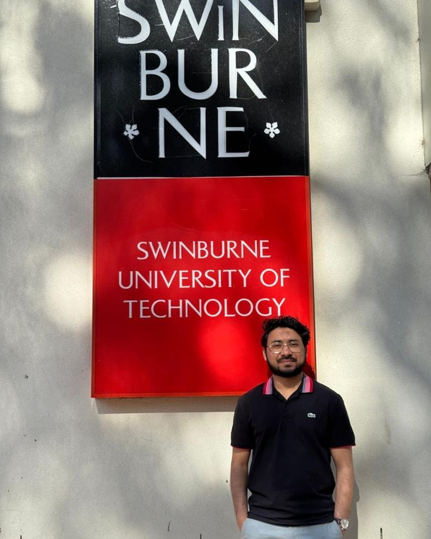

Grid connection studies
Steady-state and dynamic studies to connect batteries and solar farms to the grid, checked against generator performance standards.
Done at Siemens: studies for a 250 MW battery on the South Australian network.
PhD researcher and sessional lecturer, Swinburne University of Technology, Melbourne
I study how electric cars and homes that share power with each other can keep the electricity grid steady as we move to net zero.
I'm an electrical engineer finishing my PhD at Swinburne University in Melbourne. My work sits between research and industry. I've run grid connection studies for a 250 MW battery at Siemens, tested blackout recovery methods at CSIRO, and I teach smart grid design to engineering students.
Before coming to Australia, I spent several years at Aligarh Muslim University in India building and testing hardware that measures power flow in electricity networks. That work led to a published patent.


I've done this work in industry at Siemens, not just written about it. If your team needs help with any of the following, I'd like to hear from you.
Steady-state and dynamic studies to connect batteries and solar farms to the grid, checked against generator performance standards.
Done at Siemens: studies for a 250 MW battery on the South Australian network.
Building and maintaining network models, and Python scripts that run compliance checks automatically instead of by hand.
Done at Siemens: automated checks against dynamic performance standards. Trained in PSS®E and PSS® SINCAL.
Planning when and how electric cars charge, so they don't overload local networks and voltage stays within limits.
Published: Journal of Energy Storage 2025, IEEE ETFG and AUPEC 2025, and a WEVJ cover story.
Tools I use: PSS®E, PSS® SINCAL, MATLAB/Simulink, Python (NumPy, Pandas, CVXPY), IBM CPLEX
I'm also open to research collaborations, and to postdoc or research roles from 2027.
I've been lucky to learn from and work with these organisations.